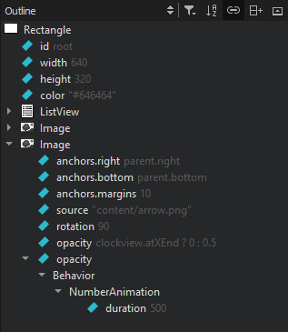
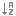

Outline
To move the code for types and symbols around in the source file, drag them in the outline.

- To see a complete list of all bindings, select
 (Filter Tree) > Show All Bindings.
(Filter Tree) > Show All Bindings. - To sort types or symbols alphabetically, select  (Sort Alphabetically).
- To stop the synchronization with the type or symbol selected in the editor, deselect
 (Synchronize with Editor).
(Synchronize with Editor).